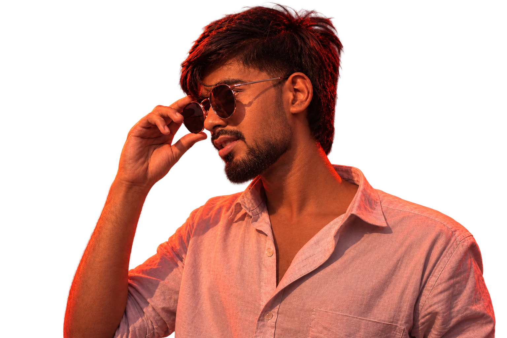

Featured
Edits
Creative
Video Editor

Editing • Sound Design
Color Grade • VFX
Narrative • Cut
Elevate your visual storytelling
Delivering high-quality cuts and grades on tight deadlines without compromising creativity.
Meticulous attention to color science, pacing, and visual rhythm for premium results.
Expertise in both classic film techniques and modern, high-engagement social media styles.
From raw footage to final cut, assembling the narrative flow that captures attention.
Developing the visual mood and aesthetic tone through professional color correction and styling.
Enhancing videos with dynamic titles, lower thirds, and animated visual elements.